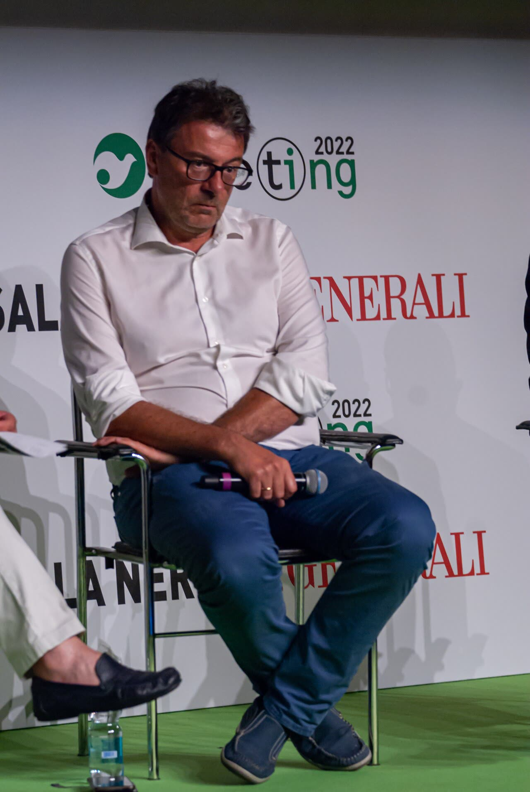

Zelensky: gli USA sondano Kiev sul Donbas per la Nato (Washington tace)
Una domanda riferita non è un'offerta; se lo diventasse, l'art. 5 per Kiev impegnerebbe anche l'Italia: meglio garanzie senza adesione.
Una domanda riferita non è un'offerta; se lo diventasse, l'art. 5 per Kiev impegnerebbe anche l'Italia: meglio garanzie senza adesione.

— FINE EDIZIONE · HAI LETTO TUTTO QUELLO CHE CONTA —